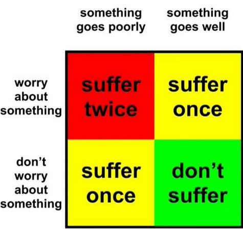

Let's take care of that! What are you having anxiety about?
Alright, buddy. What about your career?
You have been working for 6 years (8, if you count internships) and you have never once been told
that you aren't working hard enough.
In fact, you are regularly explicitly told at work that you are a very hard worker, that you move very quickly, and that you get a lot done.
Experienced people in your workplace have called you "one of the best designers they've ever worked with" and make specific requests to work with you
and put you on important projects. Does that sound like something they would do if they thought you were slacking off?
Any time someone is waiting on you for something, you get it done ASAP. Also, you have periods of feast and famine. Sometimes you have more wiggle room
to chill out. Sometimes, you don't. When you don't, you are always busting your ass.
So yeah, you're working plenty hard! Chill out, babe.
You have been working for 6 years and have received overwhelmingly positive feedback from your peers.
You are routinely entrusted with important projects, praised by your coworkers, and have received glowing performance reviews year over year.
People who have worked with you closely in the past on small or side projects tell you you were a great teammate and get excited to work with you again.
Experienced people in your workplace have called you "one of the best designers they've ever worked with" and make specific requests to work with you
and put you on important projects. Does that sound like something they would do if they thought you weren't good at your job?
You're good at your job! Your job also puts a lot of pressure on you as usually the only designer on a team. It's reasonable that you'd be stressed out, but you are
repeatedly told not to take full responsibility for how a game is turning out if the game's having a hard time. Chill out! It'll be what it'll be.
Experienced people in your workplace have called you "one of the best designers they've ever worked with" and make specific requests to work with you
and put you on important projects.
Also, babe, not to point out the obvious, but you're literally Forbes 30 under 30 for games. If a scrungly part of you is thinking you're washed up, just remember: you were
thinking you were washed up when you were put on that list, too.
Relatively speaking, you are early in your career. There's lots more to learn! It would be crazy if you had done your best design work by now. The important thing is that
you're doing fabulously for your current level of experience, and you're taking every opportunity you can to learn!
You are working hard to improve at your craft, and I don't think anyone could say that you aren't.
You tend to have a lot of anxieties about layoffs. Which one of these are you feeling right now?
The industry is REAL nasty right now. That's not your fault. Lots of people (around your experience and skill level, even)
are struggling to find work in game development.
However, working commercially in games is not the end-all be-all of your life! Plenty of people make games as side projects working in non-games fields. In fact, a lot of
the indie titles you like the most were side projects in this way. You may actually find it more creatively fulfilling.
Just because you may end up needing to leave games for a little doesn't mean that you've failed, or that you'll never go back. Plenty of people leave games for a little, then
come back in even better positions than they were in before!
Also, you might not have to leave games. You won't know until it happens. But if you have to, don't worry - it will be okay!
I know people keep telling you the economy is bad. But also, almost all of your friends have jobs right now.
There are all sorts of things you can do. Teaching, UX, programming, product/project management, or maybe even a type of job that you had never considered! You may
be a game developer, but you have work experience, and game developers work in other fields.
The reason you're scared is because you haven't had to work a non-games job in AGES. And how lucky you are that you haven't had to! But that being said, you can't sit here
and say that you're never going to find ANY kind of job, because you just don't know that that's true.
People get jobs all the time, and you don't have to make williams of dollars. You just have to pay the bills, and you don't have to earn loads to make that happen.
Also, you might not have to leave games, which would make this point moot. You won't know until it happens. But if you have to, don't worry - it will be okay!
Totally get it. You're doing the math, you're calculating how much savings you have left, how much rent costs, all that.
Don't forget, you're not the sole breadwinner anymore! On top of your own savings, you've got plenty of support. You'll be able to take the hit, even if it means
postponing some bigger spends or just cutting back in general. You've done it before!
It'll be fine. You'll have plenty of time to earn enough money for a living. Just don't be penny wise and pound foolish!
You go out of your way to make people feel included, remember birthdays, likes/dislikes.
Nobody's perfect, but you work very hard to be a good friend! And general consensus from people is that you are a good friend. People have told you as much and go out
of their way to spend time with you, which they wouldn't do if you were a bad friend.
If memory serves, general scientific consensus is having a smaller, close-knit group of friends is better for your overall
mental health than a wide network of shallower connection.
You have both a fantastic close-knit group, plus other close friends besides. And you have many other friends besides!
Ask yourself: Are you satisfied with the connections in your life? That's a separate question, but my guess is that your answer is yes. If so, then don't worry about
how many friends you "should" have. You have plenty of friends you love and who love you.
We're all adults here. With adult responsibilities and lives and stuff. It just so happens that sometimes people go a while
without hanging out.
The good news is that you still have those connections, they don't just magically vaporize. Think about friends who you don't hear from super often, but are always delighted
when you do hear from them! It's much the same.
If there are people in your life that you would like to hear from right now, reach out to them right now. If you are satisfied, then put this worry to rest.
In Massachusetts, the statue of limitation for most felony charges is 6 years. So, if your blunder was over six years ago, was it
worse than a felony? If it wasn't, drop it right away.
If it was more recent than six years, consider the times people have made social blunders to you. Consistent positive interaction outweighs blunders.
Also consider that you're a human being, and sometimes human beings beef it. Nothing you can do but apologize, move on, and learn.
So, if you've committed to those 3 things, then time to drop it!
Get more specific, baybee. Why are you worried your friends don't like you?
We're all adults here. With adult responsibilities and lives and stuff. It just so happens that sometimes people go a while
without hanging out.
You live a rich life and lots happens, mostly good and sometimes bad. You friends have equally rich lives. Sometimes you will be ships passing in the night, but that doesn't
diminish the quality of your friendships.
Also, consider - whenever you hang out with friends who you haven't seen in a while, the sentiment from those friends is always "it's great to see you! It's a shame
we haven't hung out in a while." Which means they missed you too!
You will see your friends again, but in the meantime, take solace that they are indeed your friends and are also missing you when you don't meet up for a while.
If it's a secret third thing, I can't be as specific with my rebuttal, but I'll do my best.
Your friends regularly tell you how much they love you. They are often very specific about the things that they like about you, and bring them up regularly without
prompting when you hang out.
Your friends are also good communicators when it comes to personal grievances. They'd tell you if they didn't like you. Also, you're not an idiot - You'd be able to tell.
When you've been in situations with former friends who aren't being genuine, you've been able to tell that they weren't being genuine. Your spidey sense was going off an
awful lot, significantly heightening this anxiety. Take solace in that you haven't had that kind of regular anxiety in a while!
So yeah, if your friends didn't like you, you would know. All signs point to your friends loving you!
Your self image is a lot better than it's been in the past, but it makes sense why it would still be tough for you! What about your self-image are you struggling with right now?
Unfortunately, anxiety is something you deal with a lot. It's just brain chemistry, babe. Do you think someone who does not suffer from
severe anxiety would make this website?
You have come so incredibly far with your anxiety. Remember what it was like when you were a kid? When you were in college? You make spectacular progress managing your
anxiety year over year, even when you do have periodic spikes.
It's tough to have a chronic condition like this. It's not linear, it's not consistent, and it's hard to see outside of it when you're in it. Worse, you've been made to
feel like it's too much of a burden to place on other people.
You do an excellent job managing your anxiety on your own (again, you've made this handy-dandy tool!) but when you have to lean on other people, they are very, very
supportive of you.
Anxiety does not define your identity. You have put a lot of effort into living your life the way you want to live it, the things that scare you be damned. You regularly
do things that would have completely locked you up when you were younger and had done less work on this.
It's really tough to be anxious. It's a chronic condition, babe. But you're working on it. Don't measure yourself against people who don't deal with what you deal with.
Measure yourself against you from a few years ago.
We know why you think this. It's not fair to you and it's not based on anything remotely rational or tangible.
Every day you do your best to make decisions aligned with your morals. Your morals evolve as you learn more about the world, about other people, and about yourself.
You haven't been a 100% perfect person, because nobody has been a 100% perfect person. You cannot hold yourself to an impossible standard.
It's inevitable that you'll make mistakes, mishandle things, and do things that you will look back on later and cringe at, knowing you would do better now. But all you can
do is your best.
You do your best to do right by the people in your life, the communities you are a part of, and the causes that you can lend a hand to. That's all you can do, and I
think that that's pretty good.
We know why you think this, and it's deeply unfair to you.
Your friends have in the past directly told you that they would like you to be a bit less put together around them. They would like to be able to help you in your time of
need. Any time you have chosen to lean on a true friend, they have received you as warmly as you could possibly expect.
So, what can we take from these experiences? Well, they wouldn't ask you to be less put together if they thought you were currently a burden, and they wouldn't think of you
as a burden if you did, because they quite literally asked for it.
You've also been told that it's actually harder to support you when you are trying to hold everything on your own. The snake eats its own tail. Let your hair down, babe.
You won't regret it.
What can we consider doing a good job in life?
In terms of doing your best as a person, every day you do your best to make decisions aligned with your morals. Your morals evolve as you learn more about the world,
about other people, and about yourself.
In terms of finances, you're doing well. You're performing above the national median and you're making intelligent choices.
In terms of personal connections, you have great friends, a wonderful relationship, a better relationship with your family than ever, and you basically never feel lonely
or bereft of human connection.
In terms of chasing your dreams, you are working in your chosen field and regularly dedicate time outside of that work to pursue the things that make you happy, whether
those things are productive or not. Remember - plenty of people go home and just vegetate. You vegetate when you need to, but you also pursue the things you care about.
You live a well rounded life with lots of hobbies, interests, and interesting experiences. You show great interest in the world and are rewarded for it.
While you have mental health episodes, when you can look at your life with a clear head, even when there are ups and downs, your life is fantastic and you are very, very
grateful for it.
Frankly, the biggest source of regular stress in your life is the overwhelming pressure that you put on yourself. Obviously we can't underestimate the role your anxiety
plays in this, but still, you have to take a chill pill, babe. Life is good, and you're doing good.
You're checking up on your mental and physical health, eating well balanced meals, and regularly exercising.
You only go through periods of inactivity when you need to for stuff like, I dunno, recovering from surgery?
It's good to be aware of your health, but it's not good to obsess over it. Especially if there aren't any doctors telling you that you need to be worried.
Stay active and eat your veggies and protein and it'll be okay. If you're really worried about something, message your doctor instead of being on this website, even
if you are nervous about it.
Money is scary! It's reasonable to be worried about. What are you worried about in regards to money?
You're not running out of money. Do the math, babe. If you were running out of money, you'd be seeing it.
All signs point to your money actually being totally fine in the short and long term. And don't forget, you're not the primary breadwinner anymore!
It's okay to spend money on things you like. You're striking a good balance between short and long term savings. Things will change when you have a different job and
as life continues. So, so long as you're in the black overall, you'll be okay if you splurge here and there.
It's good to be aware of your money, but also, you're allowed to buy things you like. Be nice to yourself! At the end of the day, you're a creature in an enclosure.
Your parents lived in a different economy than you, it's true, but they also started saving way later, and are still getting to
travel and do fun things in their retirement.
You've started saving much earlier than the average bear. Don't stress yourself out. You have plenty. Also, statistically, at some point you will start working a job that
actually gives you real retirement things, which will help.
You'll be alright. Don't get too in your head about it.
You're allowed to spend money on things you like. You're a human being, not a machine. You're literally a creature in an
enclosure.
It's good to have a budget and to stick to it. But make sure you're not being penny wise and pound foolish. A couple of extra dollars over budget here or there for
things that make your life better is not only allowed - it's encouraged.
You're good at being disciplined. And, at times, sometimes discipline has to give way for real life. For fun! For emergencies! For friends and family! For all sorts
of things. Life is not a bunch of rules you can perfectly follow forever.
So, get those treats, babe. You deserve it. Take care of yourself. Have fun! Why have spending money if you can't have fun with it?
This old chestnut! Absolute classic, with plenty of options to choose from. What are you worried about?
Babe, your hobbies are for fun! They're not meant to be something you punch in and punch out of. You do them because you like
them and they make you an interesting person, just like that quote that goes around sometimes.
You have dreams of being able to do your hobbies more, just like many people do. This is a good dream to have and something to aspire to! But also, given how old you are,
your free time allotment is pretty normal right now. Actually, you probably have more time than most people do.
Your hobbies are for FUN. If there's earnestly a hobby you'd like to do right now out of a sense of enjoying it, consider doing it when you next get the chance! If you're
worried about some arbitrary "should", put that bad boy to rest. It's not doing you any good.
Nobody can take the time you've spent doing your interests away, and that'll still be with you when you get back to them. Consider your art - you hadn't practiced art for
a while before you started doing it again, and when you started doing it again, you were a lot better than before!
Do your hobbies when you want to, and don't do them when you don't. If you're not sure what you want to do, use your card deck to help you decide. It's that simple.
You have lots of thoughts and feelings about your game projects, reasonably so.
First of all, remember the NO-ONE IS GOING TO BUY YOUR VIDEOGAME manifesto. This is a good thing to keep in mind for your projects outside of work. You must make games
for you and for no other reason.
It is IMPERATIVE that you make your game projects outside of work for fun and love of the medium, and no other reason. If you do not remember why this is imperative, let
me remind you:
Statistically, your game will not make any money. If you kill yourself to make your game project and spend hours and hours of begrudging time on it in the hopes that it will
make you money, you set yourself up for failure.
When you put in all of those hours and it makes no money, those hours that you spent will become poisoned. You will be angry that you pushed yourself to do something you
didn't really want to do for no return. Obviously, there wasn't "no return" - you made art. But the dream of commercialization will have poisoned that viewpoint.
When you put in the time you want to put in and it makes no money, you will be happy, because you made art that came from a place of love.
Remember when you first started making games? You were so caught up in the love of the medium. The pure joy of being able to contribute to it, without a full understanding
of what it meant to design commercial games.
When it comes to these side projects, you HAVE to get back to this place. You have to make it for those reasons. Think about when you play a really good game, and you think
about how fun it would be to make something like it. Come from that place, too.
If you are worried that you aren't spending enough time on your big game project, ask yourself if the want to spend time on it is coming from that place of love and joy.
If it's not, you should not work on it.
Need I remind you that, at the moment, you make games for a living. You spend all day doing one thing, and then you come home and spend a lot of time doing that same thing
too. This double dipping is something a lot of people struggle with, so it's imperative that you are gentle with yourself.
Your game will get done, buddy. Games take a long time to make. You know this as much as any game developer.
Compare your game last year to how it is this year! What a world of difference, right? It'll get done. Don't you worry. Take the time to rest, if you need to. It'll be
waiting for you.
If you're really worried about it taking a long time, do you think it'll matter? Do you think anybody's paying attention? Do you think you'll run out of time?
Nobody's paying attention. There are no rules! Do what you want. The world is your playground.
A lot of the thoughts for game projects apply here as well, especially that it has to be something you do out of love. Even
more so for your non-game projects. The chance of somebody buying your game is miniscule, but the chance of one of these projects making money is even smaller.
You have to do these things because you love it. You have to do it because you're genuinely excited to make art.
If you are worried that you aren't spending enough time on your big project, ask yourself if the want to spend time on it is coming from that place of love and joy.
If it's not, you should not work on it.
If you're really worried about it taking a long time, do you think it'll matter? Do you think anybody's paying attention? Do you think you'll run out of time?
Nobody's paying attention. There are no rules! Do what you want. The world is your playground.
Don't forget: time you dedicate to your community outside of work is something you care about, but it should be something you do
when you have the bandwidth for it. You don't do yourself or others any favors stretching yourself too thin.
You care a lot about your community, and that's great! And also, your free time is very precious to you. You get very protective over it. It's reasonable to feel a bit
sensitive when that protectiveness bumps against your values of caring about your community.
Ask yourself: Do you want to do more right now? If the answer is yes, consider ways that you can do more! If the answer is no, be honest with yourself about that, and
don't hold yourself in judgment about it either.
Consider: Do you think you will be the best steward to your community if you are feeling some type of way about helping?
Also consider the number of people in the communities you are in. What percentage would you say gets involved in any sort of organizational role? My guess is that it's
quite small.
Many people do not help out, which is no shade or judgment. But it does mean that you shouldn't hold yourself to some sort of weird standard about helping. If you're worried
about other organizers thinking you're slacking, don't forget that they themselves said it's meant to be something we contribute to for fun.
Rest is an ephemeral sort of thing for you. You don't have an innate sense of when you do or don't have the energy for something,
because you're so used to pushing yourself.
In situations like this, babe, even though you're really worried about trying something a bit farther out of your comfort zone, it's a good idea to shuffle the deck and
give what you draw a try for 15 minutes.
Even if you get frustrated by what you do, it'll tell you something about what you'd like to try next! It'll tell you what you have the energy for, and what you don't, and
what you might want to give a whirl.
I know that's kind of a hard ask, but generally you get the most anxious about this sort of thing when you're in your head and just need to do something.
If this secretly means you want to work on a big project, you're welcome to give it a go. Just give yourself grace if it turns out that's not what you want to do.
What does it actually mean to use your time effectively?
The things that make your art projects interesting are the life and experiences that you put into them. Think about the smaller projects you've done recently - they've been
inspired by a life experience you've had, right? Some of them recently!
Think about what that writing book says. Even when you're not putting pen to paper, in a way, you're still writing, because your brain is a sponge for all the things that
you're experiencing, and those experiences inform your writing. The same is true for all your art.
Resting is also necessary. You're not a machine, you're a creature. You need time to play and sleep and eat and have fun. If you don't do that, you will be an unhappy
little monkey in a zoo.
You have a very skewed people on what most people are doing in their day to day. Ultimately, you spend a LOT of time working on things that fulfill you. How wonderful
for you! However, you must balance that with rest.
You are making steady progress towards your aspirations. You are balancing your projects and rest. If either of those feel out of whack right now, ask yourself
why, and if the answer is reasonable, gently correct. But odds are, you're doing totally fine, babe.
Take a deep breath, babe. Really have a think about it. Is there actually no time to rest?
Materially, what would happen if you took the time right now to relax? A few dropped chores that can easily be done tomorrow? A minor increment towards completion of your
bigger projects not fulfilled for a day?
What's the worst that would happen? Don't look at it through the big picture, with some grandiose visions of steady progress. You'll still be making steady progress.
Consider: What is ACTUALLY the worst thing that would happen?
If it's minor, then you have the time to rest. And if you're working yourself up over rest like this, then you almost certainly need it. Take the time to take care of
yourself. You're not a machine, you're a creature.
There is enough time for you to rest. It will be okay. Think about all of the other times that you have rested and it has been completely okay. In fact, I can't think of
a single time when you rested and it was disastrous, or even mildly bad.
Let's get philosophical: what does having enough time really mean?
Ultimately, in your life, you won't have enough time to pursue absolutely every little thing that interests you. HOWEVER, you will have SO much time to pursue things!
Consider how old you are right now, and all of the delightful things you've gotten to pursue. You have spent almost none of your adult life actually bored. What a blessing!
And you've gotten to explore all sorts of great things!
Think about how short your adult life has been so far. You have soooo much time to pursue sooooo much more! Do some math in your head, my friend, and be delighted at how
much life has to offer you. Double things. Triple things!
Think about it: If you lazed around for a full calendar year, what impact would that have on your overall time? Not loads, right? And generally speaking, you have struggled
to laze around for longer than a week. Maybe a month at most.
You'll have the time. Some of your projects take more time, some take less. Some of your hobbies take more time, some take less. But consider all that you've accomplished
so far, and do the math for all that you'll accomplish in the future.
Even accounting for more responsibilities piling on as life continues, there are abundant opportunities for you to do the things you want to do. Look at the other adults
in your life who are much older than you!
I know that when you're in a certain mental space, it's really hard for you to consider that you haven't been in that space forever.
It's hard to have that perspective.
Consider: you have had plenty of free time in the past, and you'll have time in the future. You're making this website on a free Saturday during a normally very busy month
for you. You had enough time to do this AND work on a game project today. Hooray!
Life is a series of cycles. Sometimes you'll be really busy. Sometimes you won't. When you're not busy, you have time to work on your projects. When you are busy, you won't.
It's that simple.
If you were to actually graph your time, you'd see those cycles, and you'd be able to see that when you're in a busy period, it won't last forever. You haven't had an
extremely extended busy period basically since college. Isn't that a blessing?
Take a deep breath, and think about when the most recent time you were able to work on a project, watch a movie, or engage with a hobby. It was probably more recently
than you think! So keep that in mind when you're worried about how busy you'll be.
You spend a lot of time waiting for the other shoe to drop. I get it, it comes with the territory of being anxious.
Paradoxically, when you are waiting for the other shoe to drop, that's time that you could spend being happy that the shoe has not fallen yet! You may not know when you
will become busy again. But consider: when has worrying about being busy again soon helped you?
If you knew you were going to be busy again soon, what would you do? Would you work harder? Do more chores? Spend more time relaxing? Now think about what it is that you
would ACTUALLY like to do with your time right now. Is that misaligned with what you would be doing if you knew you were going to be busy again?
If they are in alignment, you have nothing to worry about. If they are not in alignment, you STILL have nothing to worry about, because you can't live your life in a state
of anticipatory anxiety. Don't make me tap the sign! Don't make yourself suffer twice!
I know it feels like the anxiety is preparing you, but it really, really isn't. Do what you like, and know that you will be prepared to do what you need to do if you become
suddenly busy.
Think about all of the times that you have been busy, and how you've dealt with it. You may get a bit tired, but you've been okay! That's what it'll be like the next
time you're busy, too.
It's tough to be pulled away from your projects when you want to work on them. However, consider that your projects are generally
art projects.
The things that make your art projects interesting are the life and experiences that you put into them. Think about the smaller projects you've done recently - they've been
inspired by a life experience you've had, right? Some of them recently!
Think about what that writing book says. Even when you're not putting pen to paper, in a way, you're still writing, because your brain is a sponge for all the things that
you're experiencing, and those experiences inform your writing. The same is true for all your art.
Take a deep breath. Enjoy the moment. Absorb the experiences you have. They'll make you a more well-rounded person, and they'll allow you to make better art.
Also, and I know that this is a little harder to get through to you, but you're not just an art-making machine. You're allowed to just be a regular human being and do
human things with your life.
It's hard to be tired, babe. Real hard. I get it. I know you get tired when a lot happens.
However, a lot of times, when you get tired when a lot happens, that "a lot" is usually soooo much fun. Would you rather swap that soooo much fun for a bit of time being
tired? The things that you get busy doing are what make you a more well-rounded person.
Also, part of the reason that you get tired and then get frustrated is because you don't give yourself any grace for being tired. You'd have an easier time if you just
accepted that you were going to be tired and let yourself chill out.
You'll get through the busy things, and be better for it! Just let it happen. It's part of life, and you won't be busy forever. You'll get downtime again.
I'm being playfully affectionate, I don't think you're an idiot. Here are some things to distract you:
Wikipedia list of legendary creatures
Social
You've made a lot of progress in this area, but it makes sense that it would come up from time to time. What social thing are you anxious about?